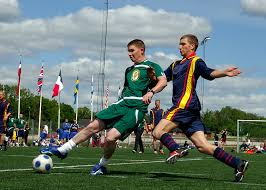
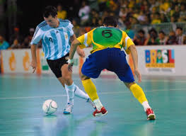

|  |
Permainan sepak bola diatur oleh Aturan-Aturan Permainan, seperangkat aturan yang telah berlaku sejak tahun 1863 dan dipertahankan oleh IFAB sejak 1886. Selama pertandingan, para pemain menggunakan kaki mereka untuk mengontrol, menendang, atau mengoper bola. Hanya penjaga gawang yang boleh menggunakan tangan dan lengan mereka, tetapi hanya di dalam area pinalti. Pertandingan sepak bola ini biasanya terdiri dari dua babak selama 45 menit, dengan total waktu pertandingan 90 menit. Tim yang mencetak gol paling banyak pada akhir pertandingan menjadi pemenangnya. Jika hingga waktu berakhir masih berakhir imbang, maka dapat dilakukan undian, perpanjangan waktu maupun adu penalti, bergantung pada format penyelenggaraan kejuaraan |
|  |
Futsal merupakan jenis sepak bola dalam ruangan yang dimainkan oleh dua tim, yang masing-masing beranggotakan lima orang. Tujuannya adalah memasukkan bola ke gawang lawan, dengan memanipulasi bola dengan kaki. Selain lima pemain utama, setiap regu juga diizinkan memiliki pemain cadangan. Tidak seperti permainan sepak bola dalam ruangan lainnya, lapangan futsal dibatasi garis, bukan net atau papan. |